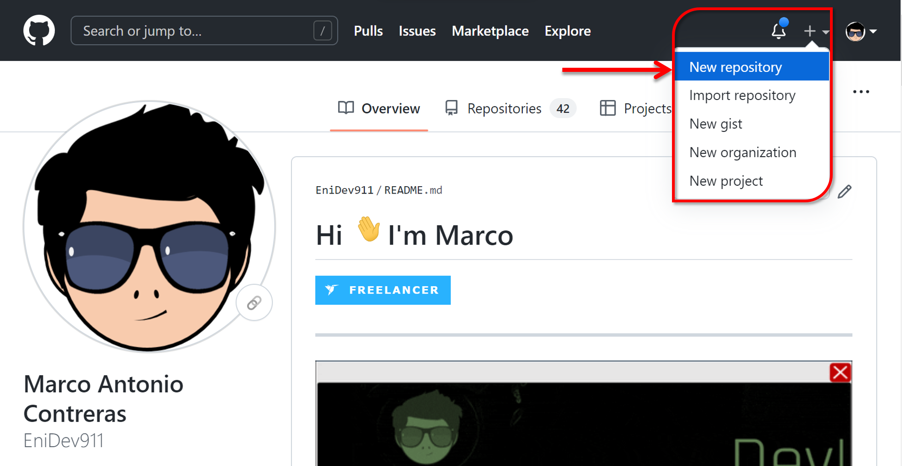
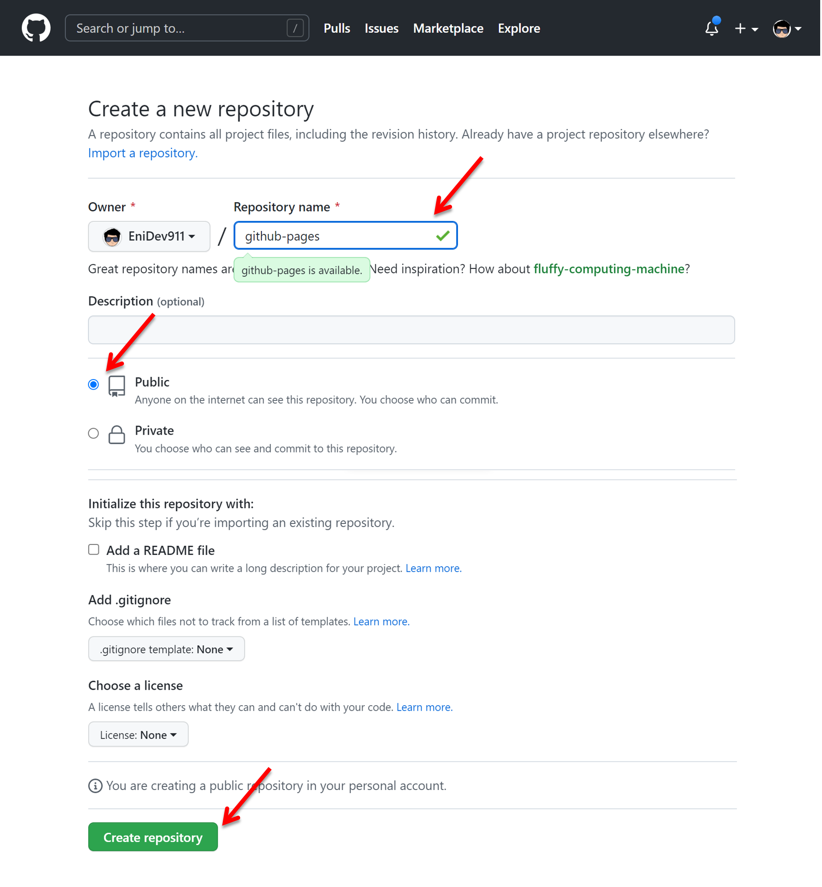
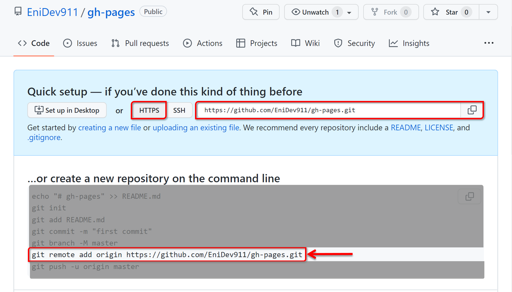
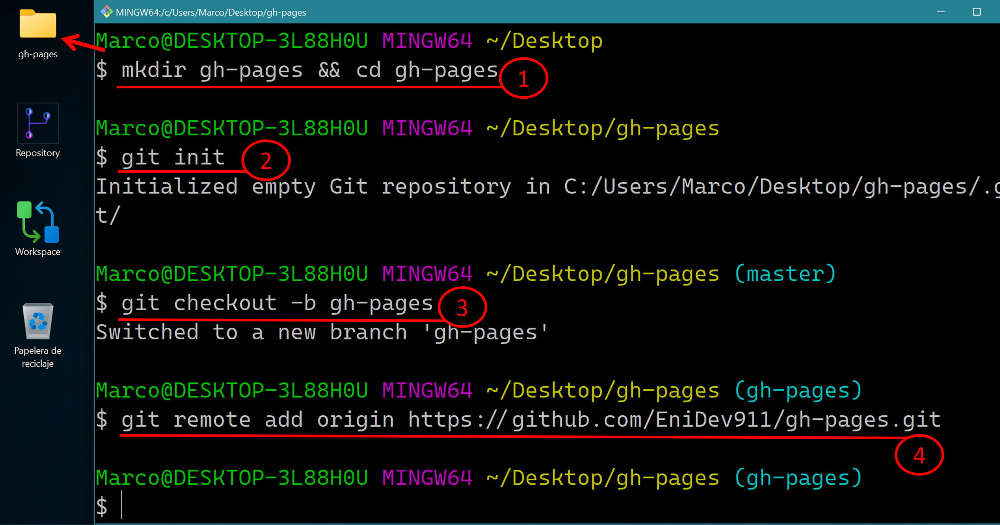
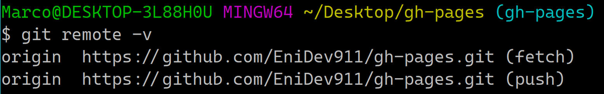
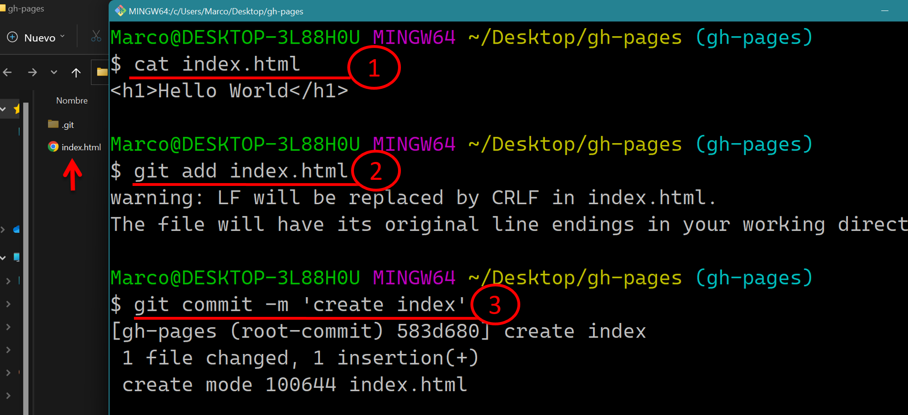

CONFIGURAR GITHUB PAGES
Contenido
- Requerimientos
- Crear un nuevo repositorio en Github
- Crear un nuevo repositorio local
- preparando el código
- publicando la página
Requerimientos previos
- Instalar Git
- Registrar una cuenta en GitHub

- Una vez te hayas registrado, inicia sesión en https://github.com
Crear un nuevo repositorio
- Iniciamos sesión en Github normalmente, luego hacemos clic en el ícono más “+” en la barra superior para abrir un submenú; ahora hacemos clic en la opción New repository para ir a la pantalla de Crear nuevo repositorio.

Captura: Crear un nuevo repositorio.
- En esta pantalla, completamos los campos Repository Name, el campo Description es opcional y dejamos el repositorio como Public (las páginas de Github no serán habilitadas para su visualización en repositorios privados). A continuación, hacemos clic en el botón verde Create repository en la parte inferior de la pantalla.

- Ahora estamos en la pantalla de configuración rápida de los comandos que nos muestra luego utilizaremos el 6.

Crear un nuevo repositorio local

- Crea una nueva carpeta en nuestro sistema de archivos y entra en ella.
mkdir gh-pages && cd gh-pages
Explicación:
- mkdir: comando para crear carpeta (make directory).
- cd: comando para cambiar de carpeta (change directory).
el ‘
&&‘ es para garantizar que se ejecute el comando solo si se cumple el primero.
- Crea un repositorio de Git vacío.
git init
- Crea una rama con el nombre de gh-pages.
git checkout -b gh-pages
El comando
git checkout -bnos crea la rama y nos cambia a esa rama para trabajar en un solo comando. Si queremos que nuestro sitio se despliegue automáticamente debemos usar este nombre para la rama.
- Agregar el repositorio remoto que creamos en Github. Ver paso 3 en la sesión anterior
git remote add origin https://github.com/EniDev911/gh-pages.git
Explicación:
- remote add: Es el comando para vincular un repositorio local a un repositorio remoto.
- origin: Es el nombre que le damos a la conexión remota.
https://github.com/user/repositorio.git: La URL del repositorio.
Podemos comprobar que esta añadido el repositorio remoto con el comando
git remote -vpara mostrar los vínculos remotos.
Preparando el código
Tú puedes almacenar cualquier código que tu quieras en un repositorio de Github, pero para usar la característica
de github pages, tu código debe estar estructurado como un sitio web típico, por ejemplo que el
punto de entrada sea un archivo index.html
(página de aterrizaje).
gh-pages # raiz del proyecto
|-- assets # sub carpeta de gh-pages
| |-- css # sub carpeta de assets
| | `-- estilos.css
| `-- js # sub carpeta de assets
| `-- funciones.js
`-- index.html # página de aterrizaje
La mejor manera de subir código a Github es mediante la línea de comandos.

Explicación:
🥷 (1): Creamos un archivo index.html y dentro solo tenemos un
<h1>Hello World</h1>. El cual lo podemos leer por medio de la línea de comandos con el
comando cat.
cat index.html
cat: es una herramienta que se utiliza en sistemas unix para concatenar archivos, de hecho viene por concatenar (concat), pero también nos muestra los contenido de archivos.
🥷 (2): Preparamos nuestra página para la confirmacíón.
git add index.html
🥷 (3): Confirmamos los cambios para poder publicar.
git commit -m 'create index'
Publicando la página
Usemos git push para enviar las confirmaciones realizadas en nuestro repositorio local a nuestro
repositorio remoto.

Explicación:
(1):
🥷 Creamos un archivo index.html y dentro solo tenemos un
<h1>Hello World</h1>. El cual lo podemos leer por medio de la línea de comandos con
cat.
cat index.html
cat: es una herramienta que se utiliza en sistemas unix para concatenar archivos, de hecho viene por concatenar (concat), pero también nos muestra los contenido de archivos.
(2):
🥷 Preparamos nuestra página para la confirmacíón.
git add index.html
(3):
🥷 Confirmamos los cambios para poder publicar.
git commit -m 'create index'
🥷 (1): El comando git push recibe dos argumentos:
- El nombre de la conexión en la mayoría de los casos es origin.
- El nombre de la rama (branch) a la que queremos subir los cambios.
La bandera
-usignifica upstream y se refiere al repositorio remoto principal al que haremospullypush, esta opción se utiliza una sola vez, luego podemos seguir trabajando solo utilizandogit pushya que Git recordará el nombre de la conexión y la rama en la que estamos trabajando.
git push -u origin gh-pages
Nota: Es importante que nos encontremos en la rama gh-pages ya que de esta manera se configurará GitHub Pages automáticamente.
🥷 (2): El mensaje que nos muestra la URL donde se subieron los cambios y la nueva rama que se creó.

🥷 (1): Este es un control dropdown que tiene una lista desplegable de las
ramas existentes:
Nota: Es nuestro caso como es el primer push solo tenemos la rama gh-pages
🥷 (2): Es el estado que describe el estado de despliegue general puede ser pending o active. Al dar clic sobre (🚀 github-pages) veremos el historial de todos los despliegues.

🥷 (1): Nos indica la rama a la cual se está haciendo el despliegue.
🥷 (2): Este botón nos permite visitar la página ya desplegada.

🥷 (1): Ya tenemos la página mostrando el encabezado que creamos en el archivo
index.html.
🥷 (2): Este URL ya se puede compartir y el patrón se compone de:
https://<username>.github.io/<repository-name>
- username: el nombre de la cuenta de github.
- github.io: el servicio de hosting que nos da github.
- repository-name: es el nombre que tiene el repositorio.
No es necesario que tengamos que indicar el nombre del archivo index.html, ya que por defecto se mostrará cualquier contenido que este dentro de un archivo llamado index.html.
Mis redes son: